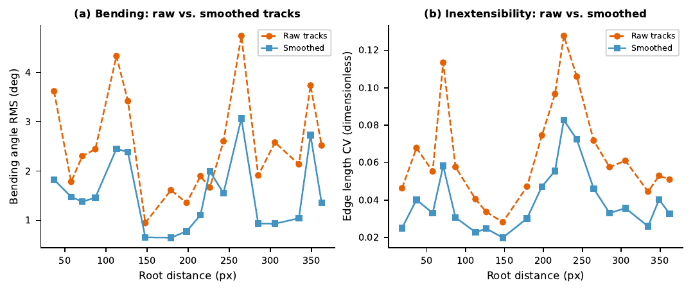
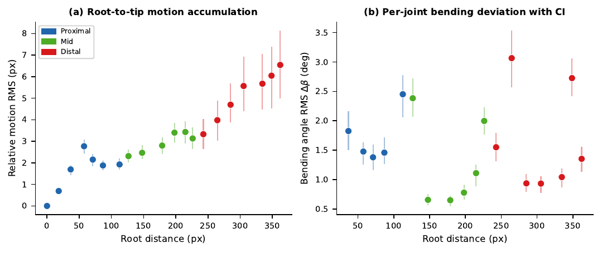
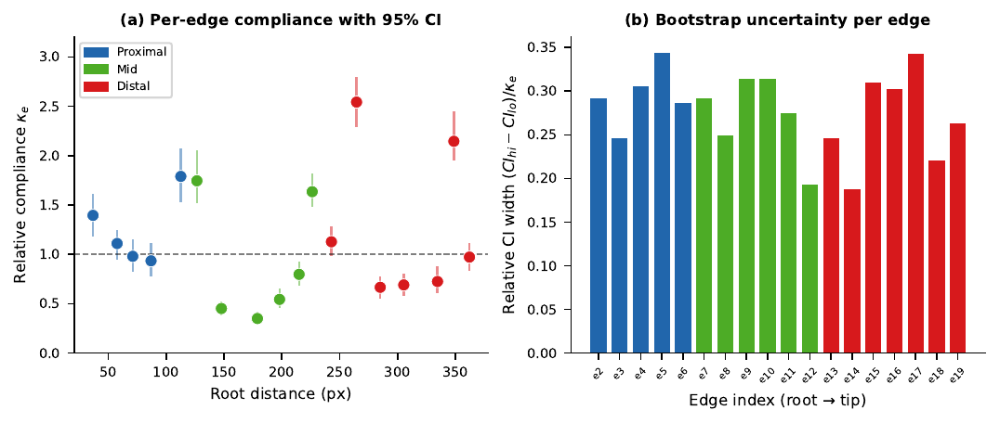
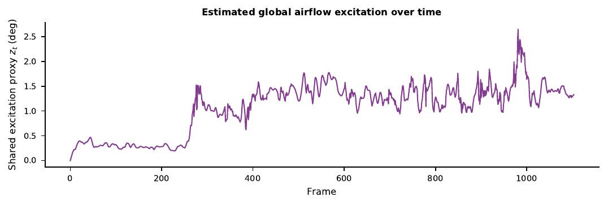
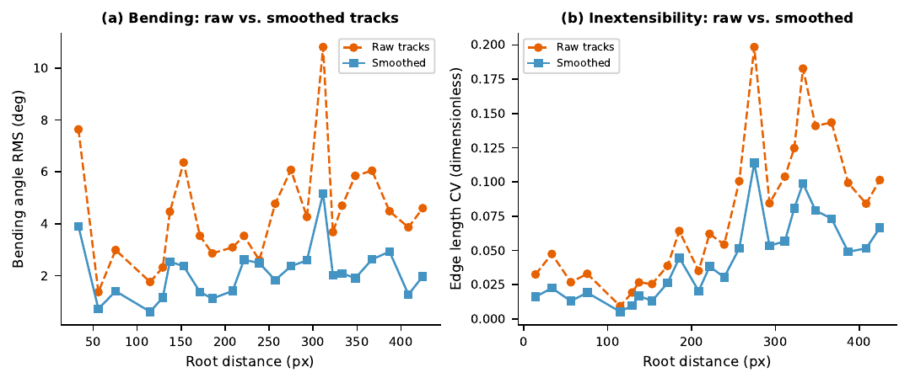
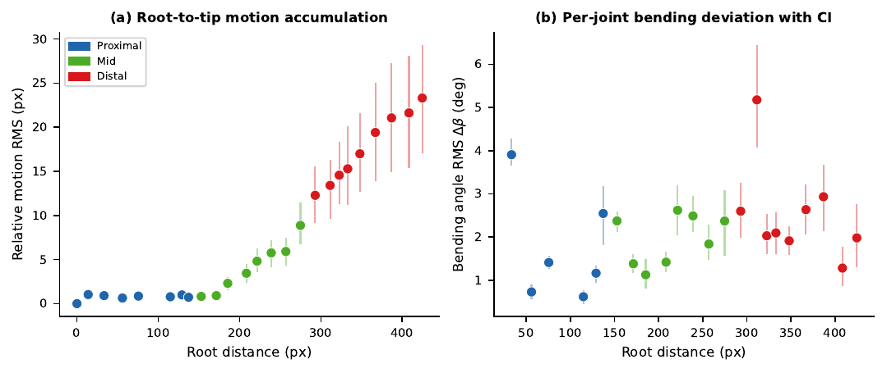
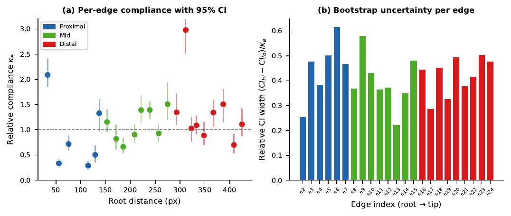
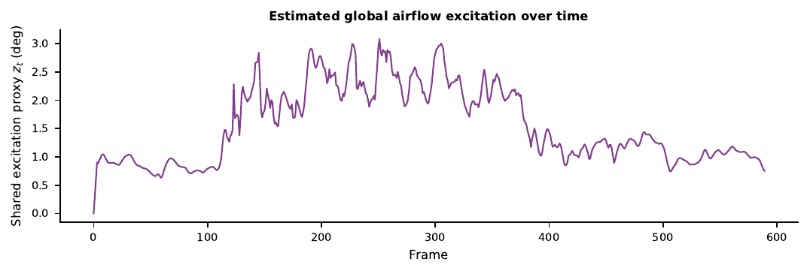

Compliance heatmap overlaid on a wind-excited plant branch in real time. Blue = stiff, Red = compliant.
Quantifying the mechanical properties of plant branches before manipulation can be valuable for automated and selective harvesting of fruits and vegetables. This is fundamentally challenging because estimation of properties such as absolute stiffness requires known force measurements, which are unreliable, expensive, and time-consuming to collect at scale. We identified artificial wind excitation as an acceptable proxy, a relative projected compliance κe that measures how much each branch segment bends compared to others under shared excitation, without requiring force measurements.
Our pipeline combines initial point tracking using TAPIR, a factor-graph-style trajectory smoother, and a separable low-rank compliance model fitted by alternating least squares. We measure the stability of the fitted κe, providing a relative uncertainty proxy for the estimates. Using monocular video of two wind-excited plants with annotated nodes and edges across hundreds of frames, we demonstrate our proof of concept. Our pipeline recovers a physically plausible proximal-to-distal relative motion gradient and an interpretable relative compliance map with 95% confidence intervals. These results demonstrate that compliance maps with corresponding uncertainty are recoverable from monocular video without ground-truth force data, enabling new possibilities for agricultural robotic branch manipulation planning.

Graphical Abstract. The monocular video of a wind-excited plant is processed through TAPIR-based tracking and factor-graph trajectory smoothing, which computes and produces the image-plane relative compliance of the plant stem at various nodes. Click image to enlarge.

Overall Methodology. Starting from a monocular plant video and annotated initial points, TAPIR generates raw trajectories which are smoothed via factor-graph optimisation. Bending angles are extracted and fed into the compliance estimation model, whose output is projected onto a 3D point cloud reconstructed by monocular depth estimation. Click image to enlarge.
Our three-stage pipeline processes monocular RGB video of a wind-excited plant branch to produce a per-edge relative compliance map with uncertainty estimates:
We validated our pipeline on two separate wind-excited plants. Select a plant to explore the full analysis.
20 nodes · 19 edges · 1104 frames
Annotated branch graph with raw TAPIR trajectories. Tracks are noisy due to pixel noise and brief occlusions.
After factor-graph optimisation. Temporal smoothness and branch inextensibility enforced; geometric noise reduced by ~39%.

Fig. 4 — Smoothing Comparison. Bending angle RMS (left) and edge-length CV (right) for raw TAPIR (orange) vs. smoothed (blue) tracks. Click to enlarge.

Fig. 5 — Node Motion vs. Root Distance. Per-node displacement amplitude as a function of distance from the root. The proximal-to-distal gradient confirms physically plausible wind-excited dynamics. Click to enlarge.

Fig. 6 — Per-Edge Compliance vs. Root Distance. κe per edge with 95% bootstrap CIs. Colours: proximal, mid, distal. The non-monotonic profile shows compliance is not merely motion amplitude. Click to enlarge.

Fig. 7 — Excitation Timeseries. Estimated shared excitation zt over time, showing the wind-driven oscillation used to fit the compliance model. Click to enlarge.
Interactive 3D point cloud (drag to rotate, scroll to zoom) with the compliance heatmap projected using DepthAnything V2 monocular depth estimation. Blue = stiff, Red = compliant.
Independent validation of the pipeline on a second plant subject
Raw TAPIR trajectories on Plant 2. Similar noise characteristics to Plant 1.
After factor-graph optimisation on Plant 2. The smoother generalises to the new plant topology without re-tuning.

Fig. 4 — Smoothing Comparison (Plant 2). Factor-graph smoothing again reduces bending angle RMS and edge-length CV, confirming the smoother generalises across plant topologies. Click to enlarge.

Fig. 5 — Node Motion vs. Root Distance (Plant 2). The proximal-to-distal motion gradient is recovered for Plant 2 as well, validating generalisation to different plant geometries. Click to enlarge.

Fig. 6 — Per-Edge Compliance vs. Root Distance (Plant 2). κe per edge with 95% bootstrap CIs. Plant 2 shows a distinct compliance profile, demonstrating plant-specific mechanical characteristics are captured. Click to enlarge.

Fig. 7 — Excitation Timeseries (Plant 2). Estimated shared excitation zt for Plant 2. The wind-driven oscillation pattern reflects the different experimental conditions. Click to enlarge.
Point tracking is powered by TAPIR (Tracking Any Point with per-frame Initialization and temporal Refinement).
Monocular depth estimation uses DepthAnything V2 for 3D point cloud reconstruction.
Factor-graph optimisation is inspired by GTSAM / factor-graph approaches for dynamics-constrained optimisation.
Uncertainty estimation uses the moving-block bootstrap to handle temporally correlated bending signals.
@inproceedings{bhowmik2026uncertainty,
title = {Uncertainty-Aware Relative Compliance Estimation of Wind-Excited Plant from Monocular Video},
author = {Bhowmik, Abhimanyu and Behrens, Jan and Babu{\v{s}}ka, Robert},
booktitle = {ICRA 2026 Workshop on Agricultural Robotics},
year = {2026}
}